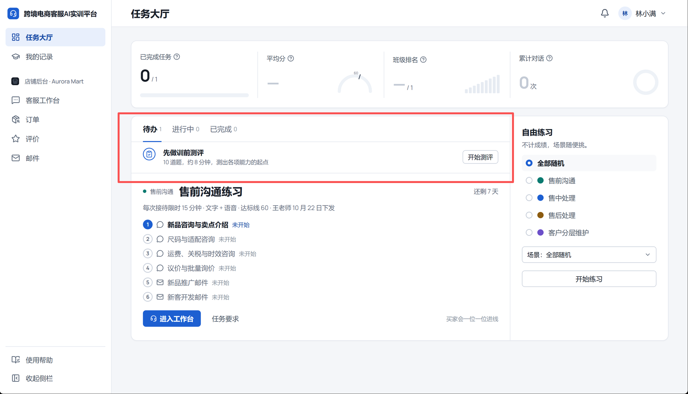
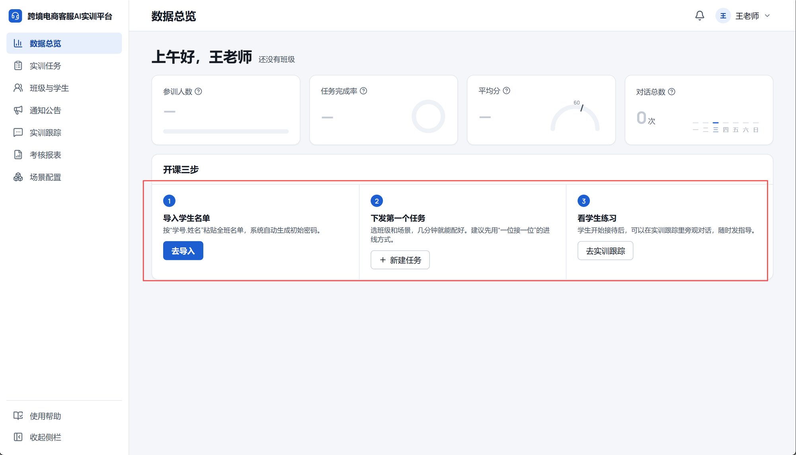

两处局部改版：学生端任务大厅的“先做训前测评”，教师端数据总览的“开课三步”。页面其余部分、数据、接口都不动。示例数据是编的（按 45 人的班级），只看版式。
| 位置 | 现在的问题 | 改法 |
|---|---|---|
| 学生端 · 先做训前测评 | ||
| 看不出是第一件事 | 测评只是一行普通列表行：标题 15 号、按钮是白底小按钮；下面任务的标题 24 号，“进入工作台”是蓝色实心。视线先落到任务上，测评被跳过。 | 提到页签上方，做成一整条浅蓝横条：蓝底图标块 + 16 号标题 + 蓝色实心“开始测评”。测评没做时，任务卡的“进入工作台”改成白底按钮（照样能点），一页只有一个蓝色按钮。 |
| 有进行中的任务就看不到 | 测评只放在“待办”页签里；有进行中的任务时，页面默认停在“进行中”，测评就藏起来了。 | 放在页签上方，三个页签都能看到；做完自动消失。 |
| 图标没对齐 | 图标是 26px 的空心圆环，和步骤号、单选框长得一样；它按两行字的顶部对齐，按钮却是上下居中，图标看着偏上。 | 换成 44px 蓝底方块，和两行字一样高；图标、文字、按钮三者上下居中。图标左边线和下面的“待办”页签、任务圆点对齐。 |
| 教师端 · 开课三步 | ||
| 按钮高低不齐 | 按钮紧跟在说明后面。第二步说明折成两行，它的按钮就比另外两个低一截。 | 三列等高，说明区撑满，按钮压在同一条底线上；窗口变窄、说明折行时也一样。 |
| 太挤、线多 | 编号、标题、说明、按钮之间只隔 4～12px，说明是 12 号小字；标题下一条横线，三列之间各一条竖线。 第一版：标题下的横线和步骤间的绿色连线叠在一起，看着怪；第二版：改成四列、标题放左边，不如第一版（2026-10-22 反馈，已撤回）。 | 第三版回到第一版的版式（标题在上、三步三列、编号在上、按钮贴底），只改线：标题下的横线去掉；步骤间的连线见下面 A / B 两种。卡内上下留 24～28px，标题 16 号，说明 14 号、行高 22。 |
| 字多 | 第二步的“建议先用‘一位接一位’的进线方式”——新建任务里默认就是一位接一位，这句是多余的。 | 删掉这句，每步说明一行： ① 粘贴“学号,姓名”名单，自动生成初始密码 ② 选班级和场景，几分钟就能配好 ③ 学生接待时可以旁观对话、随时发指导 |
| 看不出该做哪步 | 三个编号都是同样的蓝色实心圆，三个按钮里有两个是白底，现在该做哪一步要自己判断。 | 当前步：蓝色实心 + 浅蓝光圈，按钮蓝色实心；后面的步骤：灰色空心，按钮白底；做完的：绿色对勾，按钮换成“查看名单 ›”文字链接。标题旁写“1 / 3”。 |


测评提到页签上方，一整条浅蓝。没做测评时，全页只有“开始测评”是蓝色实心；任务卡的“进入工作台”暂时是白底，照样能点。
对齐细节（1:1）。横线：图标、两行字、按钮的中线；竖线：图标、“待办”页签、任务圆点的左边线。辅助线只在稿子里。
还没有任何任务时，任务栏显示的是“开始三步”，第一步就是测评（蓝色实心按钮），这种情况不出横条，保持现状。
版式和第一版一样，标题下的横线去掉。步骤之间的连线有两种处理，下面两屏只差这一处（都是“导入名单之后”）：
A 推荐留一条 1px 灰色细线。卡里只剩这一条线，表示“按顺序做”；做完的一段不再变绿，完成只看绿色对勾。
B连线也去掉。卡里一条线都没有，顺序只靠编号 1、2、3。
还没有班级时（A）。第一步是当前步，“去导入”是蓝色；B 同理，只是没有连线。下发第一个任务后，这一块换成“进行中的任务”（现状不变）。
窗口变窄、说明折行时（A，1:1，宽 900）。说明折成两行，三个按钮照样在一条线上。
| 项 | 说明 |
|---|---|
| 学生端 | TaskHall.tsx：测评从“待办”列表里移到页签上方，三个页签都显示；没做测评时第一个任务的“进入工作台”用白底按钮。student-learn.css：.th3-base 换成横条样式。 |
| 教师端 | LiveOverview.tsx、ui.css 的开课三步：标题下不画横线、去掉竖线、连线按选定方案、三种状态、按钮贴底、删掉第二步的建议。工作区里那版还没提交的改动（标题挪到第一列）不沿用，回到“标题在上、三步三列”。 |
| 不改 | 测评题目和弹窗、没有任务时的“开始三步”、数字卡、自由练习、开课三步出现和消失的时机、接口和数据。 |